/* mitch-epstein - proofs */
12 plates. Deterministic overlays rendered by the composition-analysis skill.
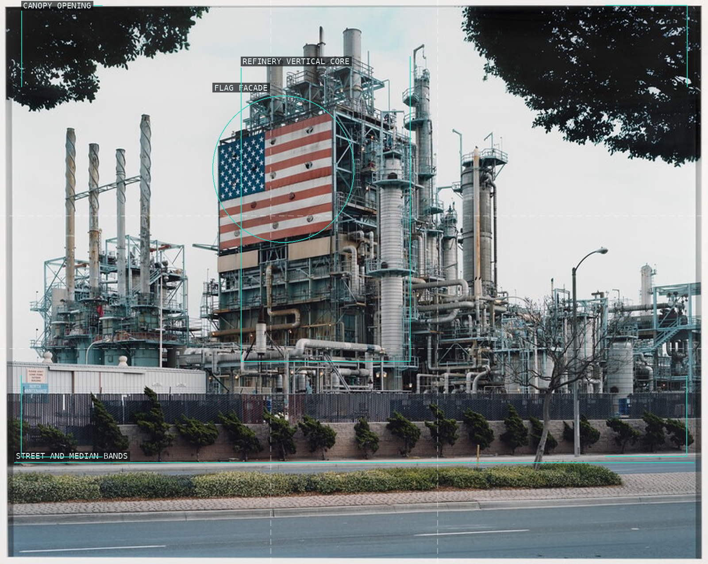
01-bp-carson-refinery
The flag-bearing refinery is centered and made monumental by a low civic street band.
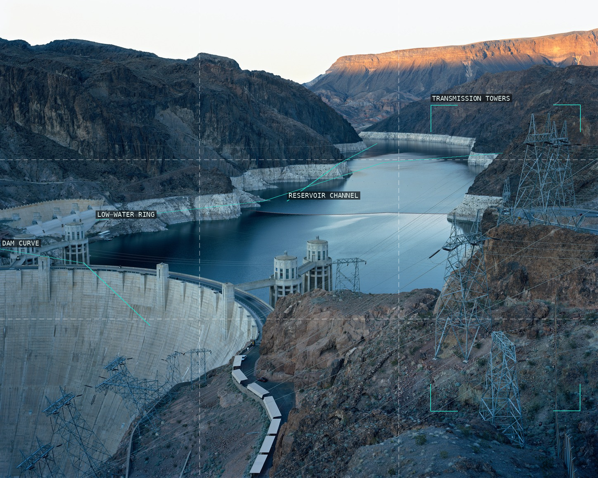
02-hoover-dam-lake-mead
Dam, shore, and transmission structure make a working landscape out of the reservoir basin.
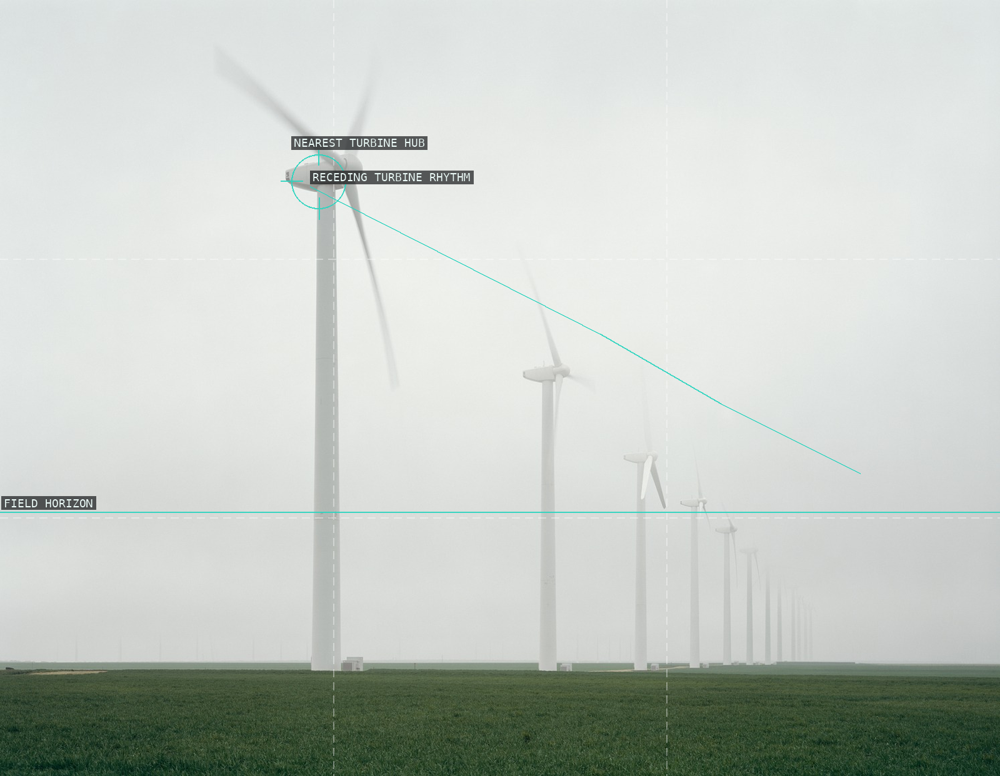
03-green-mountain-wind-farm
A nearest turbine initiates a diminishing rhythm across fog, sky, and field.
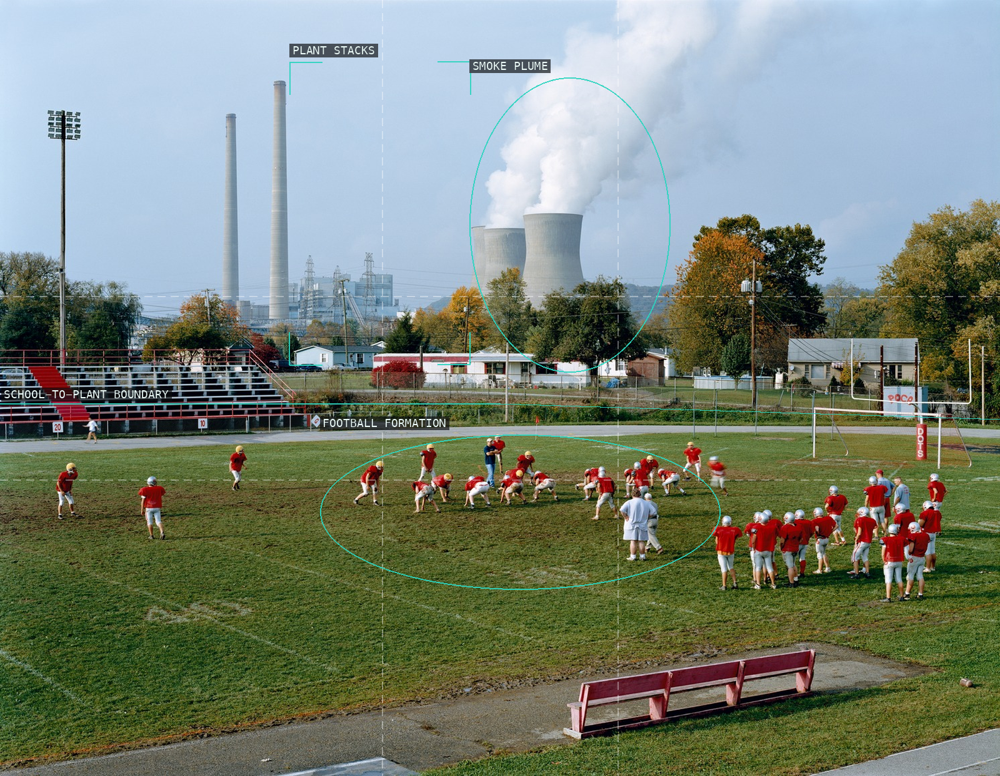
04-poca-high-school-amos-plant
A dispersed football practice is held under the plant's distant vertical scale.
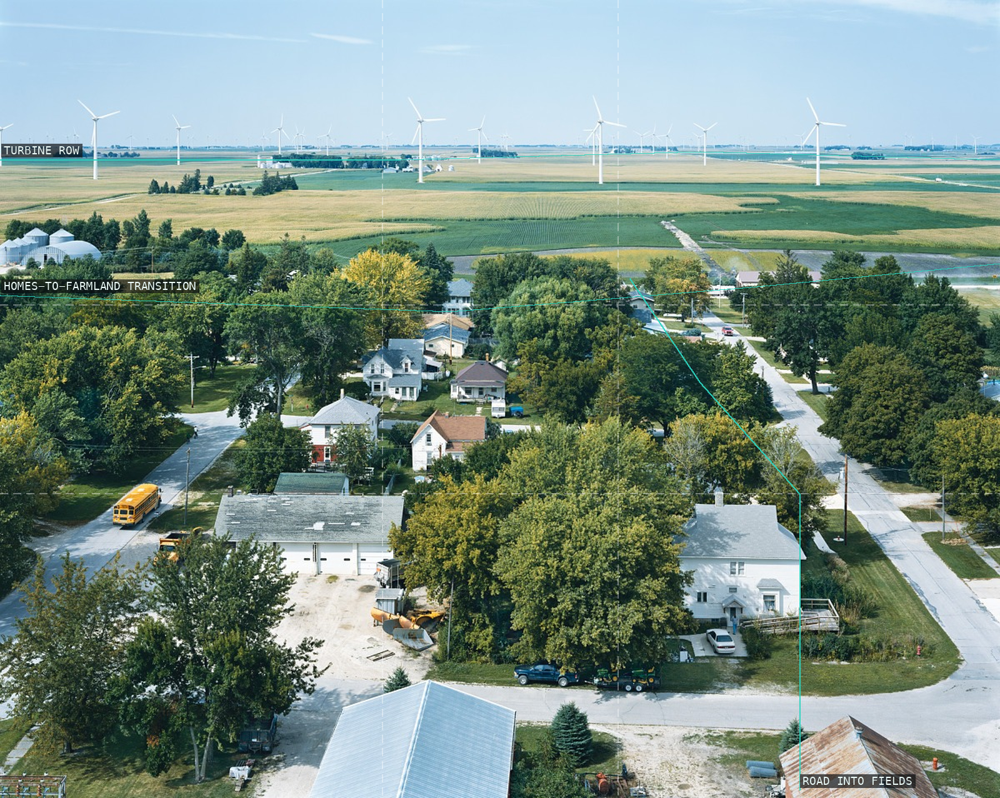
05-century-wind-project
A residential street and a field of turbines share one receding, inhabited grid.
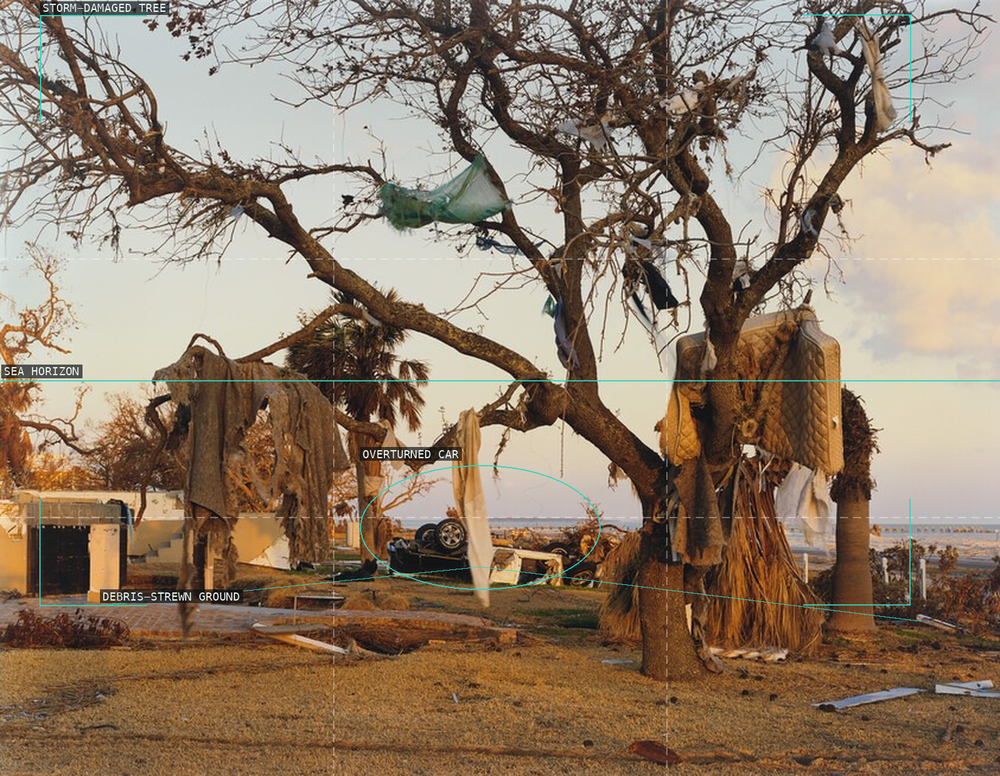
06-biloxi-mississippi
The storm's torn branches turn debris, car, and shore into a tense diagonal field.
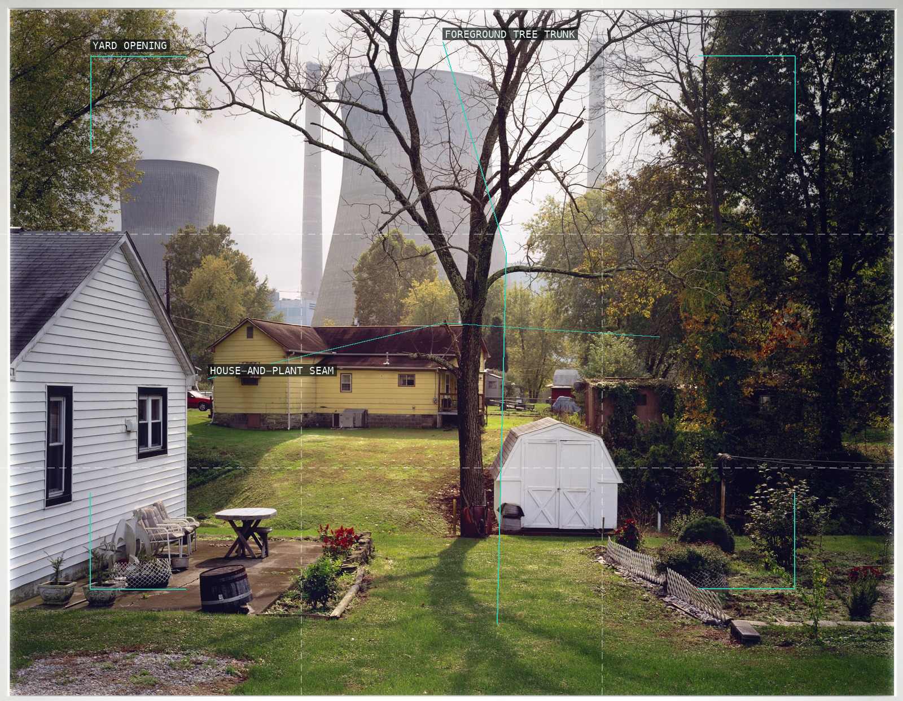
07-amos-coal-power-plant
A domestic yard is framed by trees while the coal plant exceeds the houses behind it.
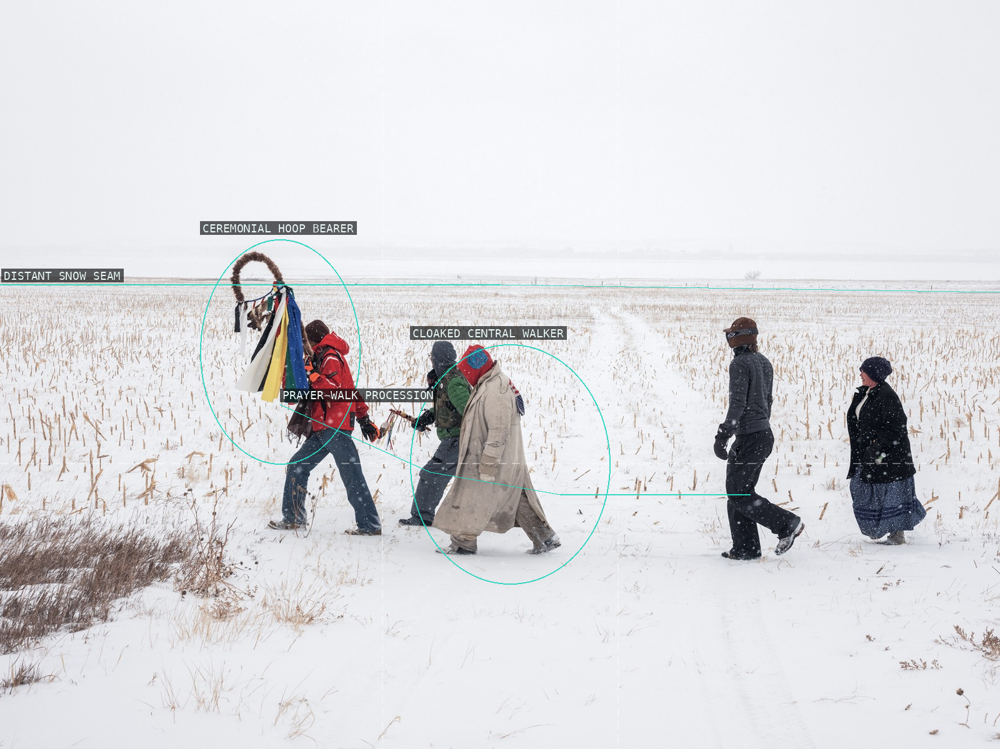
08-standing-rock-prayer-walk
Walkers form a distributed procession across an expansive, nearly empty snowfield.
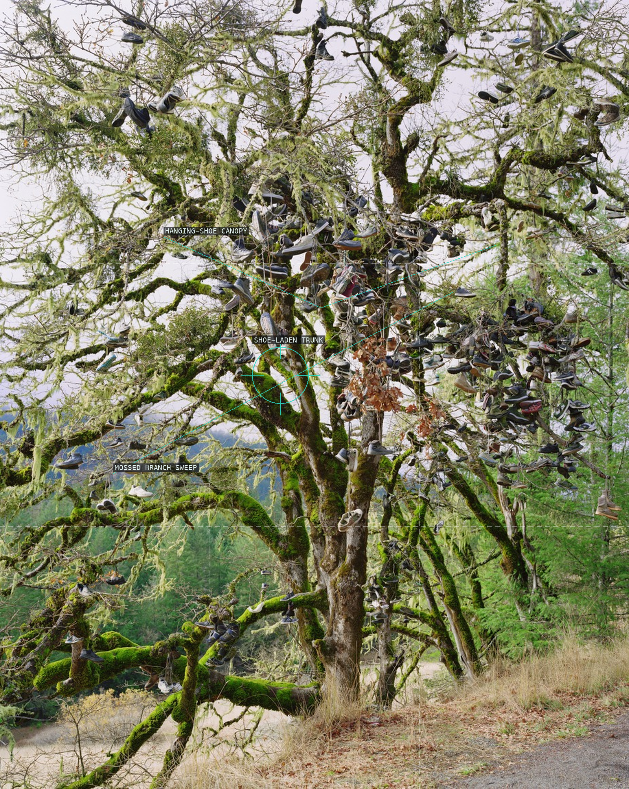
09-dinsmore-california
The tree's branching architecture becomes a crowded social archive of suspended shoes.
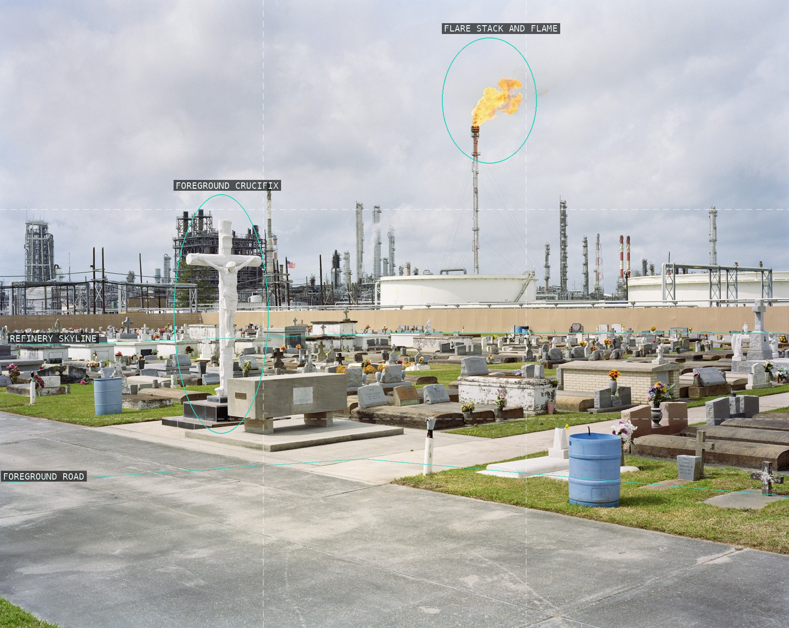
10-holy-rosary-cemetery
Memorial markers keep a lived foreground against the refinery's sprawling industrial horizon.
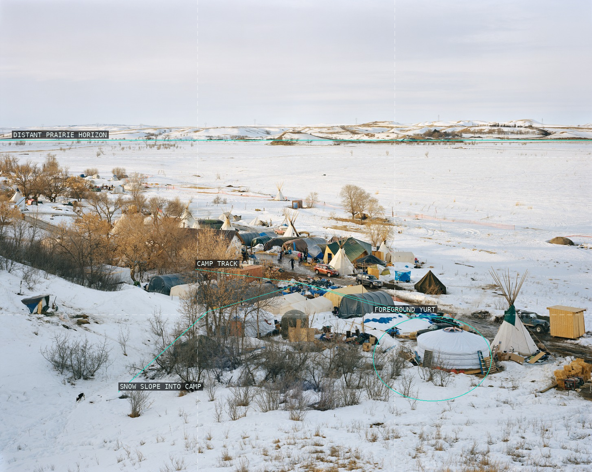
11-sacred-stone-camp
Temporary structures make an inhabited center within a broad, exposed winter landscape.
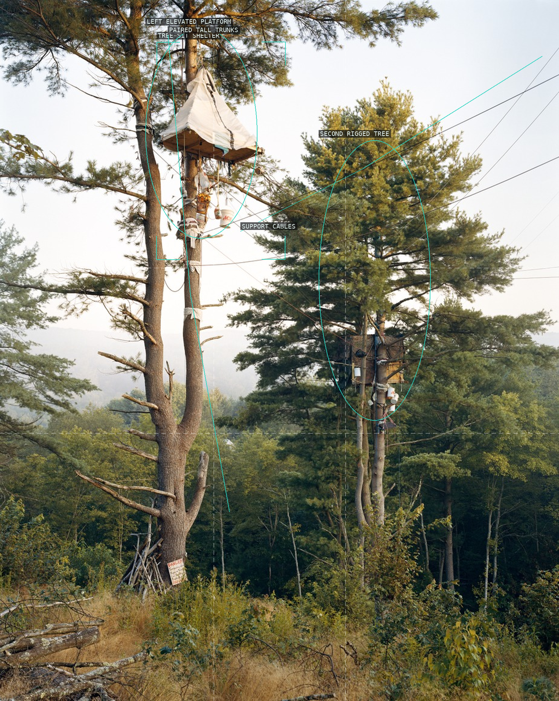
12-tree-sits
A small elevated shelter makes the canopy read as contested civic architecture.